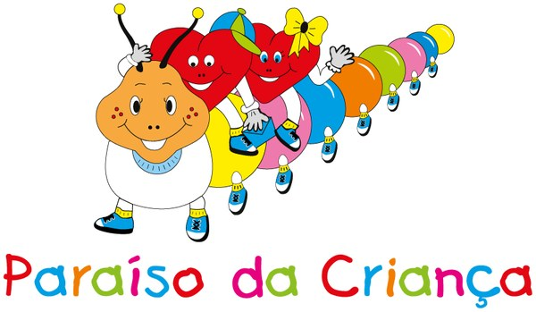

Uma história que cresce junto com a infância.
Desde 2002, construímos um espaço dedicado a acolher, respeitar e inspirar as descobertas da Primeira Infância.

Há mais de duas décadas, uma semente foi plantada.
Essa história começou no alto de uma colina, com o sonho de uma menina que cresceu entre livros e cadernos. Inspirada pelo avô e pela mãe, Gil transformou o desejo de ensinar em realidade, e assim nasceu o Paraíso da Criança: um lugar para descobrir o mundo, construir memórias e crescer com amor.
Desde então, a história do Paraíso é feita de encontros. De famílias que confiaram, de educadores que compartilharam conhecimentos e de crianças que preencheram nossos espaços com perguntas, brincadeiras e descobertas.
Seguimos dedicados exclusivamente à Primeira Infância, buscando construir um ambiente em que o cuidado, o desenvolvimento e o respeito caminhem juntos.
Hoje, temos a alegria de receber uma segunda geração de famílias: filhos de quem um dia também viveu a infância aqui. Uma prova de confiança construída ao longo do tempo.
Uma trajetória sustentada por valores que permanecem essenciais.
- Amor
- União
- Trabalho
- Estudo
- Honestidade
A cada passo, caminhamos juntos.
Assim como uma centopeia, que avança a cada passo com harmonia e união, o Paraíso sempre caminhou junto: crianças, famílias e educadores.
Nosso mascote simboliza essa jornada coletiva, em que cada movimento ganha força na união. Suas cores lembram a alegria da infância, a energia das nossas crianças e o compromisso com a natureza que nos cerca.
Uma nova identidade, as mesmas raízes.
Hoje, o Paraíso se moderniza com uma nova identidade visual, que reflete nossa evolução sem deixar para trás o que nos trouxe até aqui: a união, a alegria da infância e a natureza que nos ensina a crescer com raízes fortes e asas abertas.

Acreditamos em uma infância que floresce com liberdade.
Uma infância com tempo para observar, espaço para brincar, oportunidades para explorar e relações que acolhem.
É essa compreensão que orienta nosso cotidiano e dá sentido ao nosso compromisso com a educação.
Uma escola que respira natureza e inspira a infância.
25 anos de histórias. Infinitas descobertas pela frente.
Em 2027, celebramos 25 anos de dedicação à Primeira Infância.
Mais do que recordar o caminho percorrido, celebramos as relações, as experiências e tudo o que continuamos construindo juntos.
Assista à nossa história · 1min37
-
 2003
2003O primeiro ano letivo
Começam as atividades pedagógicas do Paraíso. O muro colorido marcou os primeiros anos da escola.
-

Desde 2003Nossa primeira marca
Desde a abertura, a primeira centopeia do Paraíso já trazia as cores, a alegria e a ideia de caminhar juntos que nos acompanham até hoje.
-
 Hoje
HojeNova identidade, as mesmas raízes
Uma escola que se renova sem deixar para trás o que a trouxe até aqui.

O próximo capítulo pode começar com uma visita.
Venha conhecer o Paraíso de perto e conversar com a nossa equipe.